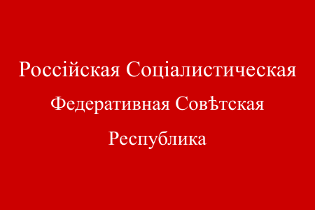

Флаг РСФСР 1918 годаДекретом Всероссийского Центрального Исполнительного Комитета от 13 апреля 1918 года было установлено: «Флагом Российской Республики устанавливается красное знамя с надписью: Российская Социалистическая Федеративная Советская Республика». В тексте декрета не содержалось никаких уточнений относительно цвета, величины и расположения надписи, соотношения ширины и длины полотнища.
Флаг РСФСР (1918-1937)
Государственный флаг РСФСР (17 июня 1918 — 21 января 1937)17 июня 1918 года ВЦИК утвердил образец изображения флага РСФСР, разработанный по поручению НКИД художником-графиком Сергеем Васильевичем Чехониным. Флаг представлял собой красное прямоугольное полотнище, в верхнем углу которого, у древка, была помещена надпись «РСФСР» золотыми буквами, стилизованными под славянские; эта надпись от остальной части полотнища с двух сторон была отделена золотыми полосками, образующими прямоугольник.
Флаг РСФСР (1937-1954)
Государственный флаг РСФСР (17 июня 19347 — 21 января 1954)21 января 1937 года Чрезвычайным Всероссийским XVII съездом Советов была утверждена новая конституция РСФСР, которая гласила:
Статья 149. Государственный флаг Российской Советской Федеративной Социалистической Республики состоит из красного полотнища, в левом углу которого, у древка наверху, помещены золотые буквы «РСФСР»[137].
Постановлением Президиума ВЦИК от 1 апреля 1937 года был утверждён новый образец изображения государственного флага РСФСР, разработанный по поручению Президиума ВЦИК художником А. Н. Милькиным. В отличие от флага РСФСР прежнего образца, новый флаг не имел обведённого золотыми линиями крыжа, а аббревиатура названия республики была нанесена обычным шрифтом, без разделительных точек.
Флаг РСФСР (1954-1991)
Государственный флаг РСФСР (17 июня 1954 — 21 января 1991)23 декабря 1955 года было утверждено «Положение о Государственном флаге РСФСР», в котором были точно описаны размеры и расположение изображений на флаге. Законом РСФСР от 2 июня 1954 года этот Указ был утверждён и описание флага внесено в 149 статью Конституции РСФСР:
Государственный флаг Российской Советской Федеративной Социалистической Республики состоит из красного полотнища со светло-синей полосой у древка во всю ширину флага. Светло-синяя полоса составляет одну восьмую длины флага. В левом верхнем углу красного полотнища изображены золотые серп и молот и над ними красная пятиконечная звезда, обрамлённая золотой каймой. Отношение ширины флага к длине 1:2.
.svg)
.svg)
.svg)